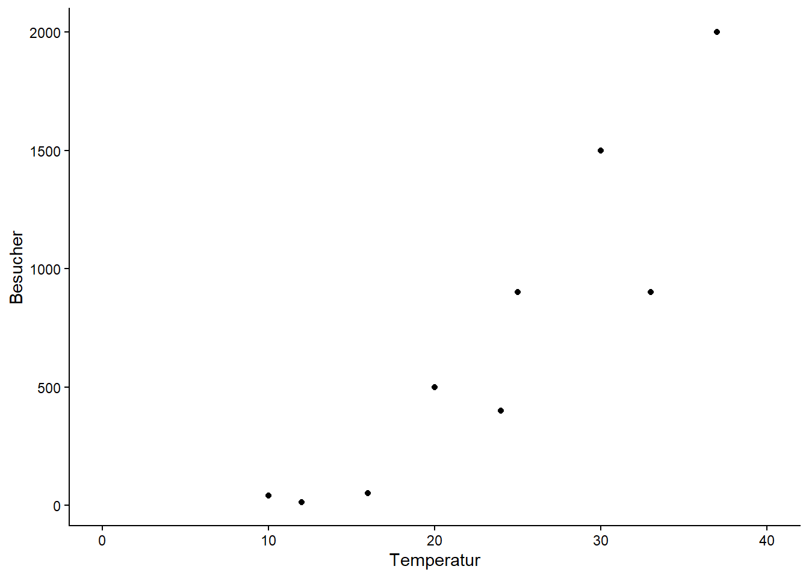
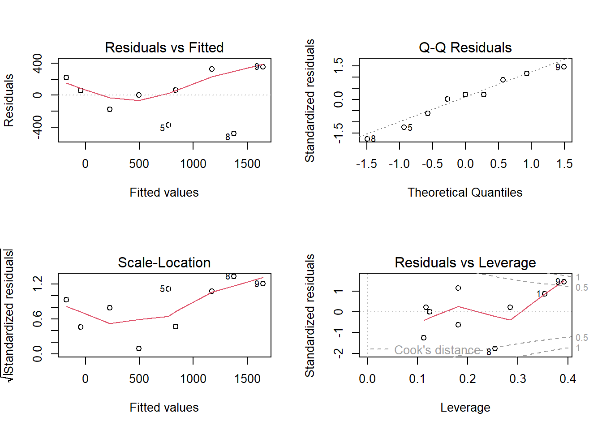
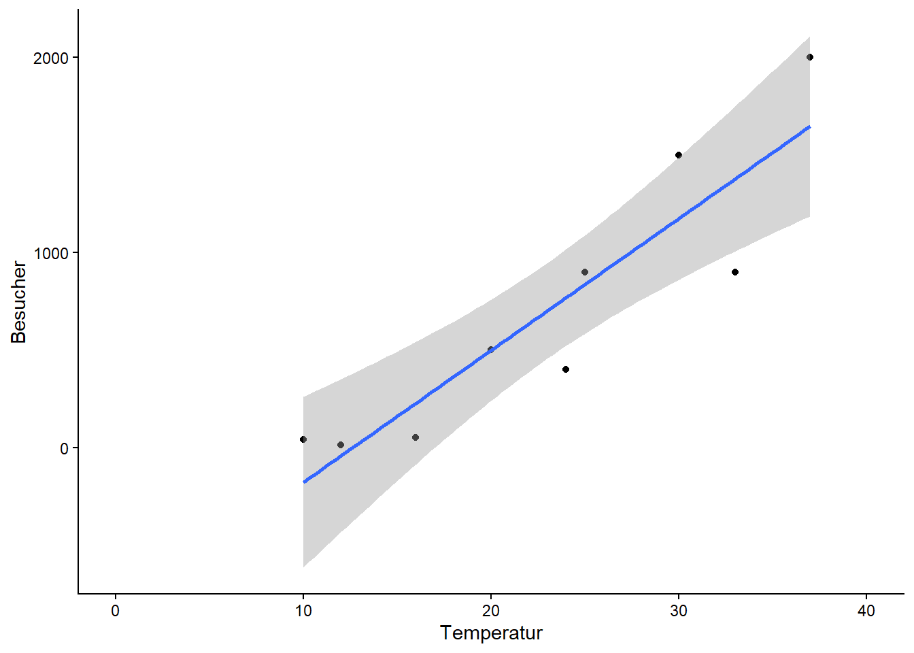
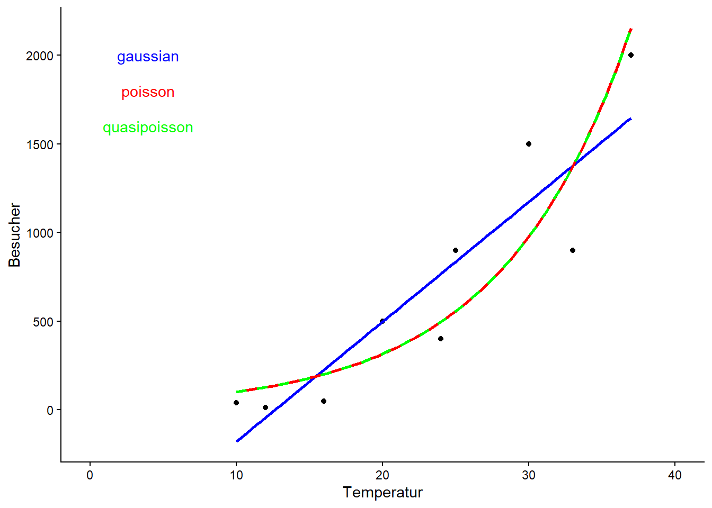
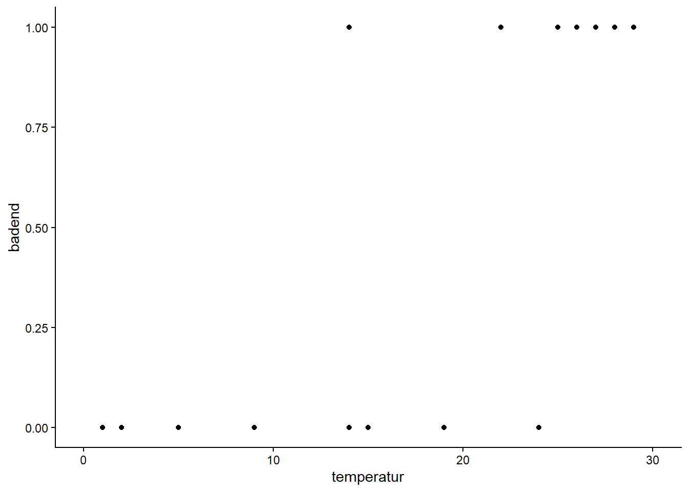
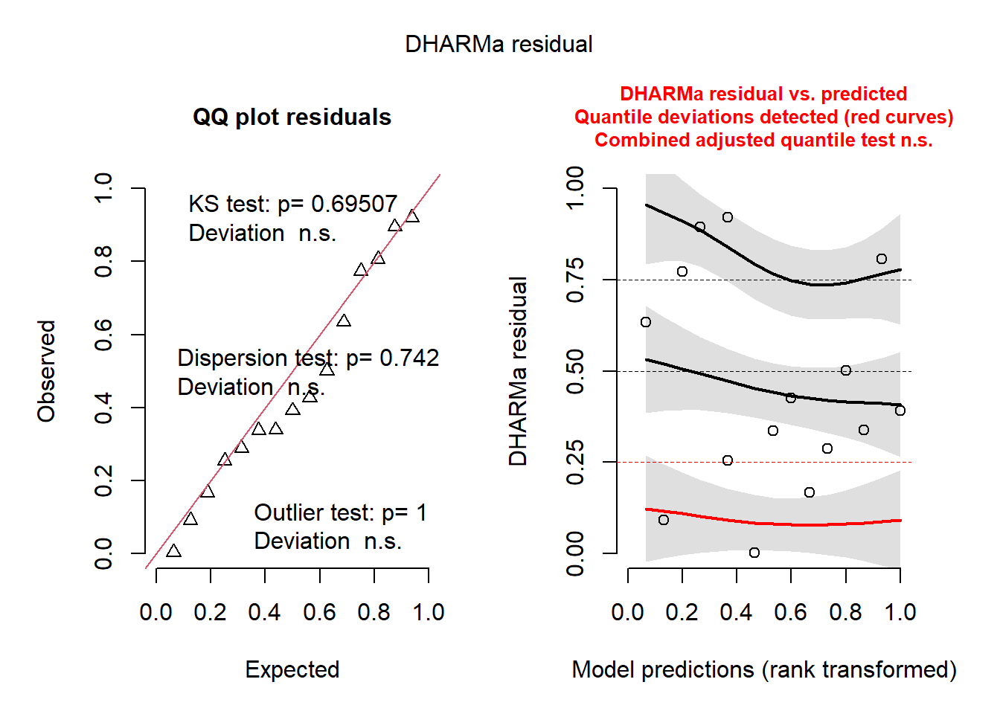
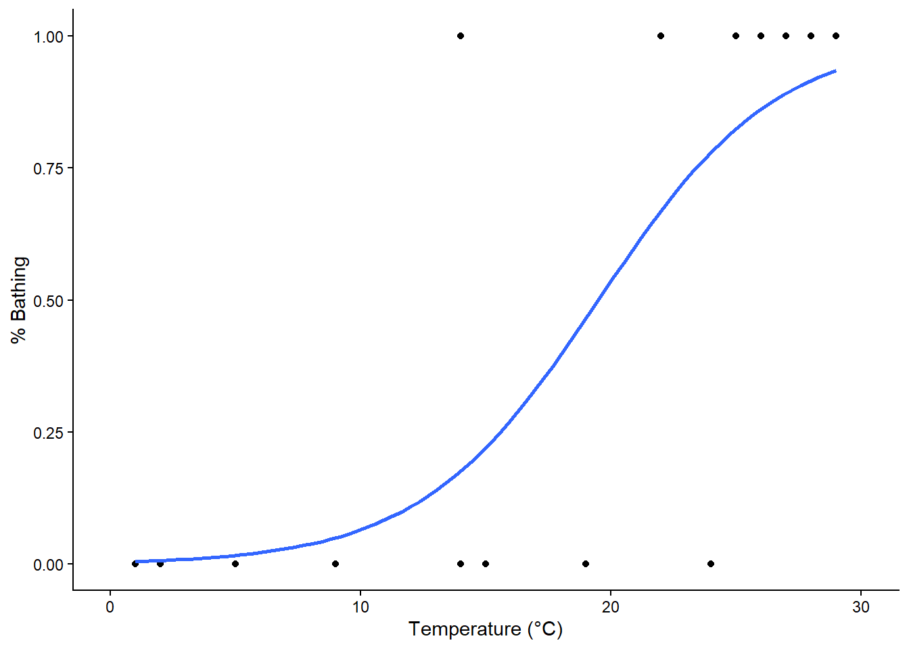
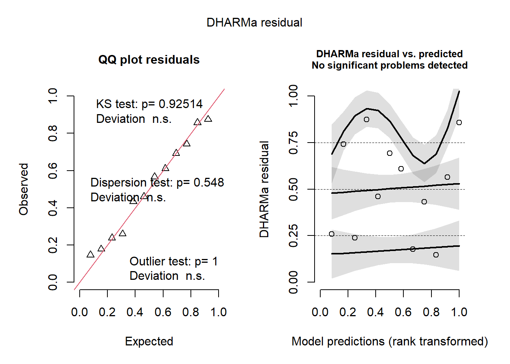
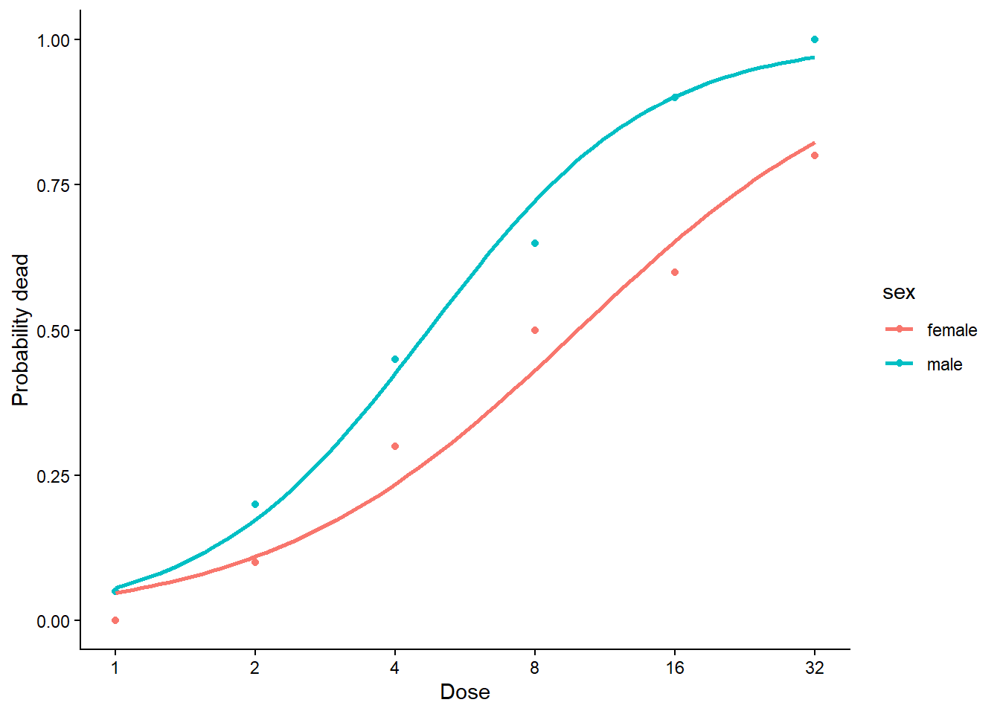

library(readr)
library(ggplot2)
library(tibble)Statistik 5: Demo
Demoscript herunterladen (.qmd)
von LMs zu GLMs
# Daten erstellen und anschauen
strand <- tibble(
Temperatur = c(10, 12, 16, 20, 24, 25, 30, 33, 37),
Besucher = c(40, 12, 50, 500, 400, 900, 1500, 900, 2000)
)
ggplot(strand, aes(Temperatur, Besucher)) +
geom_point() +
xlim(0, 40) +
theme_classic()
# Modell definieren und anschauen
lm_strand <- lm(Besucher ~ Temperatur, data = strand)
summary(lm_strand)
Call:
lm(formula = Besucher ~ Temperatur, data = strand)
Residuals:
Min 1Q Median 3Q Max
-476.41 -176.89 55.59 218.82 353.11
Coefficients:
Estimate Std. Error t value Pr(>|t|)
(Intercept) -855.01 290.54 -2.943 0.021625 *
Temperatur 67.62 11.80 5.732 0.000712 ***
---
Signif. codes: 0 '***' 0.001 '**' 0.01 '*' 0.05 '.' 0.1 ' ' 1
Residual standard error: 311.7 on 7 degrees of freedom
Multiple R-squared: 0.8244, Adjusted R-squared: 0.7993
F-statistic: 32.86 on 1 and 7 DF, p-value: 0.0007115# Modellvalidierung
par(mfrow = c(2, 2))
plot(lm_strand)
ggplot(strand, aes(x = Temperatur, y = Besucher)) +
geom_point() +
xlim(0, 40) +
geom_smooth(method = "lm") +
theme_classic()
# GLMs definieren und anschauen
# ist dasselbe wie ein LM
glm_gaussian <- glm(Besucher ~ Temperatur, family = "gaussian", data = strand)
summary(glm_gaussian)
Call:
glm(formula = Besucher ~ Temperatur, family = "gaussian", data = strand)
Coefficients:
Estimate Std. Error t value Pr(>|t|)
(Intercept) -855.01 290.54 -2.943 0.021625 *
Temperatur 67.62 11.80 5.732 0.000712 ***
---
Signif. codes: 0 '***' 0.001 '**' 0.01 '*' 0.05 '.' 0.1 ' ' 1
(Dispersion parameter for gaussian family taken to be 97138.03)
Null deviance: 3871444 on 8 degrees of freedom
Residual deviance: 679966 on 7 degrees of freedom
AIC: 132.63
Number of Fisher Scoring iterations: 2Poisson Regression
# Poisson passt besser zu den Daten
glm_poisson <- glm(Besucher ~ Temperatur, family = "poisson", data = strand)
summary(glm_poisson)
Call:
glm(formula = Besucher ~ Temperatur, family = "poisson", data = strand)
Coefficients:
Estimate Std. Error z value Pr(>|z|)
(Intercept) 3.500301 0.056920 61.49 <2e-16 ***
Temperatur 0.112817 0.001821 61.97 <2e-16 ***
---
Signif. codes: 0 '***' 0.001 '**' 0.01 '*' 0.05 '.' 0.1 ' ' 1
(Dispersion parameter for poisson family taken to be 1)
Null deviance: 6011.8 on 8 degrees of freedom
Residual deviance: 1113.7 on 7 degrees of freedom
AIC: 1185.1
Number of Fisher Scoring iterations: 5Rücktransformation der Werte auf die orginale Skala (Hier Exponentialfunktion da family = possion als Link-Funktion den natürlichen Logarithmus (log) verwendet) Besucher = exp(3.50 + 0.11 Temperatur/°C)
# So kann man auf die Coefficients des Modells "extrahieren" und dann mit[]
# auswählen
glm_poisson$coefficients (Intercept) Temperatur
3.5003009 0.1128168 # Anzahl besucher bei 0°C
exp(glm_poisson$coefficients[1])(Intercept)
33.12542 # Anzahl besucher bei 30°C
exp(glm_poisson$coefficients[1] + 30 * glm_poisson$coefficients[2]) (Intercept)
977.3102 # Test Overdispersion
library("performance")
check_overdispersion(glm_poisson)# Overdispersion test
dispersion ratio = 149.683
Pearson's Chi-Squared = 1047.778
p-value = < 0.001-> Es liegt Overdispersion vor. Darum quasipoisson wählen.
glm_quasipoisson <- glm(Besucher ~ Temperatur, family = "quasipoisson",
data = strand)
summary(glm_quasipoisson)
Call:
glm(formula = Besucher ~ Temperatur, family = "quasipoisson",
data = strand)
Coefficients:
Estimate Std. Error t value Pr(>|t|)
(Intercept) 3.50030 0.69639 5.026 0.00152 **
Temperatur 0.11282 0.02227 5.065 0.00146 **
---
Signif. codes: 0 '***' 0.001 '**' 0.01 '*' 0.05 '.' 0.1 ' ' 1
(Dispersion parameter for quasipoisson family taken to be 149.6826)
Null deviance: 6011.8 on 8 degrees of freedom
Residual deviance: 1113.7 on 7 degrees of freedom
AIC: NA
Number of Fisher Scoring iterations: 5# zum Vergleich
summary(glm_poisson)
Call:
glm(formula = Besucher ~ Temperatur, family = "poisson", data = strand)
Coefficients:
Estimate Std. Error z value Pr(>|z|)
(Intercept) 3.500301 0.056920 61.49 <2e-16 ***
Temperatur 0.112817 0.001821 61.97 <2e-16 ***
---
Signif. codes: 0 '***' 0.001 '**' 0.01 '*' 0.05 '.' 0.1 ' ' 1
(Dispersion parameter for poisson family taken to be 1)
Null deviance: 6011.8 on 8 degrees of freedom
Residual deviance: 1113.7 on 7 degrees of freedom
AIC: 1185.1
Number of Fisher Scoring iterations: 5-> Die Outputs von glm_poisson und glm_quasipoisson sind bis auf die p-Werte identisch.
ggplot(data = strand, aes(x = Temperatur, y = Besucher)) +
geom_point() +
xlim(0, 40) +
geom_smooth(method = "lm", color = "blue", se = FALSE) +
geom_smooth(method = "glm", method.args = list(family = "poisson"),
color = "red", se = FALSE) +
geom_smooth(method = "glm", method.args = list(family = "quasipoisson"),
color = "green", linetype = "dashed", se = FALSE) +
annotate(geom = "text", x = 4, y = 2000, label = "gaussian", color = "blue") +
annotate(geom = "text", x = 4, y = 1800, label = "poisson", color = "red") +
annotate(geom = "text", x = 4, y = 1600, label = "quasipoisson",
color = "green") +
theme_classic()
Logistische Regression
bathing <- tibble(
temperatur = c(1, 2, 5, 9, 14, 14, 15, 19, 22, 24, 25, 26, 27, 28, 29),
badend = c(0, 0, 0, 0, 0, 1, 0, 0, 1, 0, 1, 1, 1, 1, 1)
)
ggplot(bathing, aes(x = temperatur, y = badend)) +
geom_point() +
xlim(0, 30) +
theme_classic()
# Logistisches Modell definieren
glm_logistic <- glm(badend ~ temperatur, family = "binomial", data = bathing)
summary(glm_logistic)
Call:
glm(formula = badend ~ temperatur, family = "binomial", data = bathing)
Coefficients:
Estimate Std. Error z value Pr(>|z|)
(Intercept) -5.4652 2.8501 -1.918 0.0552 .
temperatur 0.2805 0.1350 2.077 0.0378 *
---
Signif. codes: 0 '***' 0.001 '**' 0.01 '*' 0.05 '.' 0.1 ' ' 1
(Dispersion parameter for binomial family taken to be 1)
Null deviance: 20.728 on 14 degrees of freedom
Residual deviance: 10.829 on 13 degrees of freedom
AIC: 14.829
Number of Fisher Scoring iterations: 6# Modeldiagnostik (godness of fit test, wenn nicht signifikant, dann OK)
1 - pchisq(glm_logistic$deviance, glm_logistic$df.resid)[1] 0.6251679# Modelldiagnostik mit funktion "DHARMa"
library(DHARMa)
set.seed(123)
simulateResiduals(fittedModel = glm_logistic, plot = TRUE, n = 1000)
Object of Class DHARMa with simulated residuals based on 1000 simulations with refit = FALSE . See ?DHARMa::simulateResiduals for help.
Scaled residual values: 0.6342843 0.09195516 0.7732887 0.8952272 0.2542635 0.9209045 0.002792615 0.3369724 0.4265235 0.1663818 0.2881993 0.5008857 0.3387464 0.8069189 0.3916183# Modellergebnis
# Area Under the Curve (AUC)
library("performance")
performance_roc(glm_logistic)AUC: 91.07%# pseudo-R² (library "performance")
r2(glm_logistic)# R2 for Logistic Regression
Tjur's R2: 0.538# Steilheit der Beziehung (relative Änderung der odds bei x + 1 vs. x)
exp(glm_logistic$coefficients[2])temperatur
1.323807 # LD50 (also hier: Temperatur, bei der 50% der Touristen baden)
-glm_logistic$coefficients[1] / glm_logistic$coefficients[2](Intercept)
19.48311 # oder
library("MASS")
dose.p(glm_logistic, p = 0.5) Dose SE
p = 0.5: 19.48311 2.779485# Plotting
ggplot(data = bathing, aes(x = temperatur, y = badend)) +
geom_point() +
xlim(0, 30) +
labs(x = "Temperature (°C)", y = "% Bathing") +
geom_smooth(method = "glm", method.args = list(family = "binomial"), se = FALSE) +
theme_classic()
Binominale Regression
library("doBy")
?budworm
data(budworm)
str(budworm)'data.frame': 12 obs. of 4 variables:
$ sex : Factor w/ 2 levels "female","male": 2 2 2 2 2 2 1 1 1 1 ...
$ dose : int 1 2 4 8 16 32 1 2 4 8 ...
$ ndead : int 1 4 9 13 18 20 0 2 6 10 ...
$ ntotal: int 20 20 20 20 20 20 20 20 20 20 ...summary(budworm) sex dose ndead ntotal
female:6 Min. : 1.0 Min. : 0.00 Min. :20
male :6 1st Qu.: 2.0 1st Qu.: 3.50 1st Qu.:20
Median : 6.0 Median : 9.50 Median :20
Mean :10.5 Mean : 9.25 Mean :20
3rd Qu.:16.0 3rd Qu.:13.75 3rd Qu.:20
Max. :32.0 Max. :20.00 Max. :20 Die Insektiziddosen wurden als Zweierpotenzen gewählt (d.h. jede Dosis ist doppelt so hoch wie die vorhergehende Dosis). Da wir von einer multiplikativen Wirkung der Dosis ausgehen, ist es vorteilhaft, die Werte mit einem Logarithmus mit Basis 2 zu logarithmieren.
budworm$ldose <- log2(budworm$dose)
# Das Modell kann auf zwei verschiedene Varianten spezifiziert werden
glm_binomial <- glm( cbind( ndead, ntotal-ndead) ~ ldose*sex, family = binomial, data = budworm)
glm_binom <- glm(ndead/ntotal ~ ldose*sex, family = binomial, weights = ntotal, data = budworm)
coef(glm_binomial) (Intercept) ldose sexmale ldose:sexmale
-2.9935418 0.9060364 0.1749868 0.3529130 coef(glm_binom) (Intercept) ldose sexmale ldose:sexmale
-2.9935418 0.9060364 0.1749868 0.3529130 # Das Resultat ist identisch
# Modelloptimierung
drop1(glm_binomial, test = "Chisq")Single term deletions
Model:
cbind(ndead, ntotal - ndead) ~ ldose * sex
Df Deviance AIC LRT Pr(>Chi)
<none> 4.9937 43.104
ldose:sex 1 6.7571 42.867 1.7633 0.1842glm_binomial_2 <- update( glm_binomial, .~.-sex:ldose)
drop1(glm_binomial_2, test = "Chisq")Single term deletions
Model:
cbind(ndead, ntotal - ndead) ~ ldose + sex
Df Deviance AIC LRT Pr(>Chi)
<none> 6.757 42.867
ldose 1 118.799 152.909 112.042 < 2.2e-16 ***
sex 1 16.984 51.094 10.227 0.001384 **
---
Signif. codes: 0 '***' 0.001 '**' 0.01 '*' 0.05 '.' 0.1 ' ' 1# Validate Model
library(DHARMa)
set.seed(123)
simulateResiduals(glm_binomial_2, plot = TRUE, n = 1000)
Object of Class DHARMa with simulated residuals based on 1000 simulations with refit = FALSE . See ?DHARMa::simulateResiduals for help.
Scaled residual values: 0.2385679 0.4597668 0.6104038 0.4325501 0.565478 0.8582626 0.2592162 0.7425191 0.8748766 0.6927826 0.1776505 0.1468657# Resultat und Visualisierung
summary(glm_binomial_2)
Call:
glm(formula = cbind(ndead, ntotal - ndead) ~ ldose + sex, family = binomial,
data = budworm)
Coefficients:
Estimate Std. Error z value Pr(>|z|)
(Intercept) -3.4732 0.4685 -7.413 1.23e-13 ***
ldose 1.0642 0.1311 8.119 4.70e-16 ***
sexmale 1.1007 0.3558 3.093 0.00198 **
---
Signif. codes: 0 '***' 0.001 '**' 0.01 '*' 0.05 '.' 0.1 ' ' 1
(Dispersion parameter for binomial family taken to be 1)
Null deviance: 124.8756 on 11 degrees of freedom
Residual deviance: 6.7571 on 9 degrees of freedom
AIC: 42.867
Number of Fisher Scoring iterations: 4# Modellgüte (pseudo-R²)
1 - (glm_binomial_2$dev / glm_binomial_2$null)[1] 0.9458896# ld 50 Female (cf = c(1, 2) = Intercept und dosis)
( ld50_feamle <- dose.p(glm_binomial_2, cf = c(1, 2)) ) Dose SE
p = 0.5: 3.263587 0.2297539# Zurücktransformieren
2^ld50_feamle Dose SE
p = 0.5: 9.60368 0.2297539# ld 50 male
# dose.p(glm_binomial_2, cf = c(1, 2, 3))
# funktioniert nicht wir müssen es manuell ausrechnen
ld50_male <-
-(glm_binomial_2$coefficients[1] + glm_binomial_2$coefficients[2] ) /
glm_binomial_2$coefficients[3]
# Zurücktransformieren
2^ld50_male(Intercept)
4.558211 # Männliche Tiere reagieren wesentlich empfindlicher auf das Insektizid# Visualisierung
ggplot(budworm, aes(x = ldose, y = ndead / 20, color = sex)) +
geom_point() +
geom_smooth(method = "glm",
method.args = list(family = "binomial"), se = FALSE) +
labs(x = "Dose", y = "Probability dead") +
scale_x_continuous(
breaks = log2(c(1, 2, 4, 8, 16, 32)),
labels = c(1, 2, 4, 8, 16, 32)) +
theme_classic()